CO — Colombia
The main impact of a 200 basis-point (2.00 percentage-point) cut in United States interest rates on Colombia is a modest positive spillover: real GDP rises to about 0.05% above baseline by the eleventh quarter, a small and slow-building gain rather than a large stimulus. This is a minimal-band result — Colombia is not one of the economies most tightly wired to US monetary conditions — and the effect is small enough that it should be read as a gentle tailwind, not a boom.
Demand and trade. Household consumption is the most durable positive leg, climbing to roughly 0.02% above baseline by Q12 and still marginally positive at Q20. Private investment responds more sharply and earlier, peaking near 0.18% above baseline in Q9 as the cost of capital falls, then fading and turning slightly negative by Q16. Net exports — the trade balance, since this model does not split imports from exports — move the other way, falling to about −0.05% of GDP around Q8, the mirror image of the stronger domestic demand and the currency move. Government spending is essentially flat, drifting to a shallow trough of about −0.006% near Q11 before recovering, while government debt builds gradually to roughly 0.04% above baseline by Q17 as the primary balance softens.
External / FX. The real exchange rate falls to about −0.59% below baseline by Q9 — that is a real appreciation of the Colombian currency, not a depreciation, since a decrease in this series means the home currency has strengthened in real terms. The appreciation is the natural counterpart of the easier US stance pulling capital toward higher-yielding markets, and it is what weighs on the trade balance: a stronger real currency makes Colombian goods relatively more expensive, which is consistent with net exports sitting below baseline through the horizon even as domestic demand strengthens.
Labour. Employment rises steadily, reaching about 0.03% above baseline by Q15 and holding positive through Q20. Unemployment falls in parallel, bottoming at roughly −0.006 percentage points around Q13–Q14 — a small improvement in the jobless rate. Real wages dip first, to about −0.05% below baseline near Q10, as the initial inflation drop outpaces nominal wage adjustment, then recover and turn positive from Q17, ending around 0.04% above baseline.
Prices. CPI inflation falls to about −0.026 percentage points below baseline in Q2, the largest disinflationary reading, then crosses back above baseline from Q10 and settles modestly positive. Domestic inflation follows a similar arc, troughing near −0.018 percentage points in Q2 before turning positive after Q10. Firms' marginal cost rises to roughly 0.03% above baseline by Q11, consistent with the demand pickup feeding through to costs later in the horizon.
Financial conditions. The local policy rate initially eases, dipping to about −0.05 percentage points below baseline around Q4–Q5, then reverses and climbs to roughly +0.05 percentage points above baseline by Q16 as the domestic recovery and inflation turn take hold. Government yields are mixed: the 2-year yield first dips, then rises to about +0.04 percentage points above baseline by Q13; the 5-year yield peaks near +0.017 percentage points in Q11; and the 10-year yield edges up to about +0.008 percentage points by Q12. Bond prices rise early, peaking around +0.18% above baseline near Q4, then fall to about −0.18% below baseline by Q16 as yields back up. Equity prices gain strongly at first, peaking near +0.33% above baseline in Q8, before fading and turning slightly negative from Q17. Tobin's Q — the value of installed capital — peaks around +0.12% above baseline in Q9 and then slips below baseline after Q16. House prices grind higher throughout, reaching about +0.05% above baseline by Q15 and staying positive. Bank credit supply improves only marginally, to roughly +0.0003% above baseline by Q16, and the lending spread is unchanged at zero across the entire horizon.
Sectoral and capital. Manufacturing GDP is the standout beneficiary, rising to about +0.18% above baseline by Q9 — the largest sectoral gain — before easing but remaining positive through Q20. Services GDP rises more gently, peaking near +0.03% above baseline in Q11 and turning marginally negative at the very end. The capital stock accumulates slowly, reaching about +0.008% above baseline by Q15 and holding there.
Timing. The GDP gain builds gradually, is largest around Q11 at roughly +0.05% above baseline, and has largely faded by Q18, turning slightly negative by Q20. The equity and investment peaks arrive earlier, around Q8–Q9, while the labour-market and house-price gains peak later, in the mid-teens.
Close. These are model impulse responses relative to baseline, not forecasts. They describe how Colombia's block of the model behaves when US rates are cut 200 basis points, holding everything else at its baseline path.
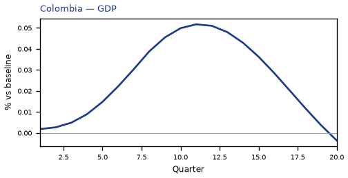
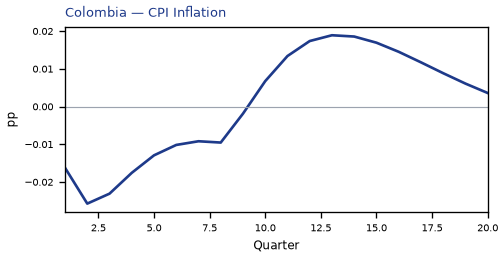
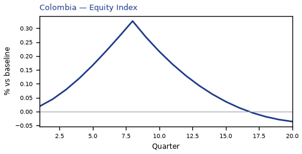
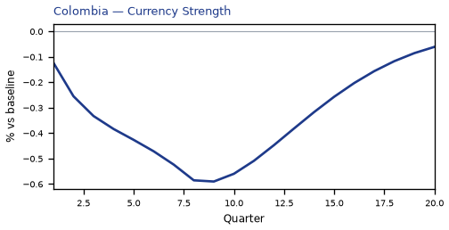
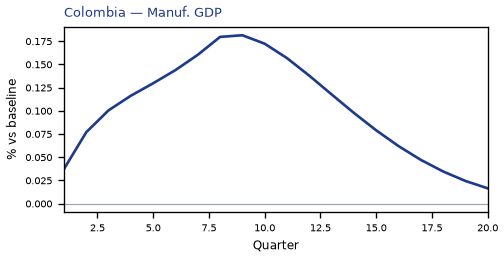
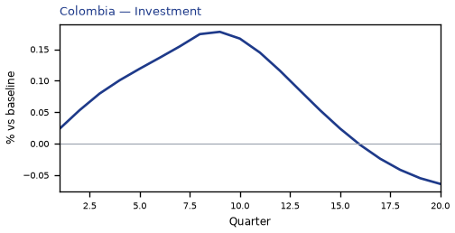
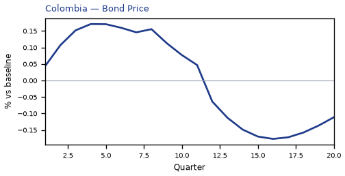
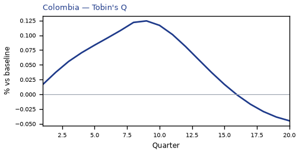
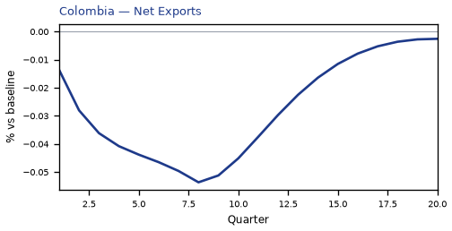
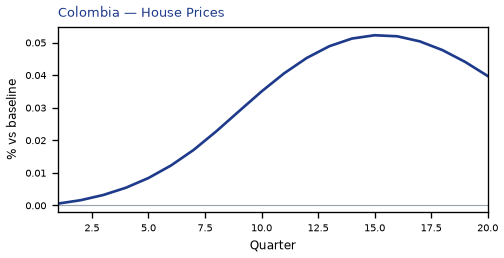
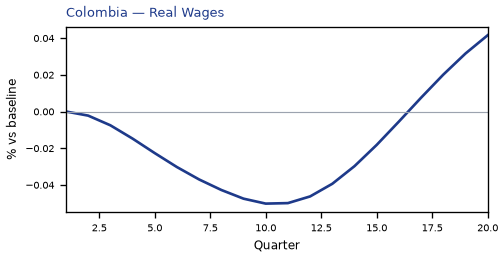

source=live · global_macro_v5 · contract v6 · Q1–Q20 JSON · not financial advice